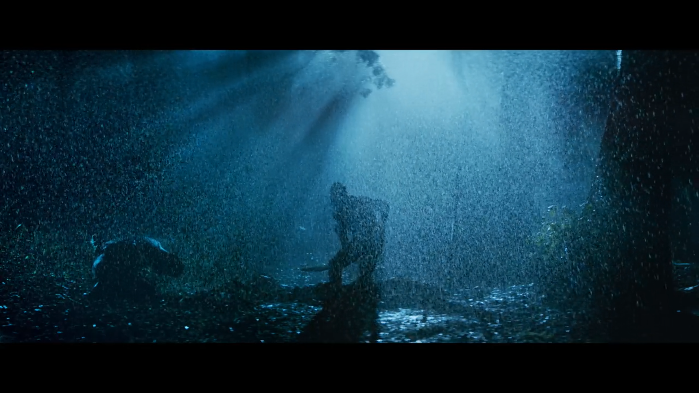

Irul is a Malayalam mystery/thriller film starring Fahad Fasil, Soubin Shahir, and Darshana Rajendran. Sunil Yadav wrote the script for this film, which was directed by Naseef Yusuf Izuddin. Irul was released on Netflix on 2 April 2021.
Alex Parayil, a poet and businessman, and his girlfriend Archana Pillai are planning a phone-free weekend. However, their car will break down on the way and they will seek shelter at a nearby home. The rest of the story takes place after they meet a stranger.
I enjoyed the writing process of "Irul," which had a clear three-act structure. Both the protagonist and antagonist were also swapped as a result. We could easily figure out who the antagonist was from the start. However, as I previously stated, it clearly reflects
the three-act structure, with both protagonist and antagonist swapping roles in the second half. And the writer had added many elements or events to justify that swapping process. But that was just an oral definition; there was no written definition. Also, at the
third phase, both of them are again swapped. Sunil Yadav's screenplay was catchy and appreciable in some scenes, such as the three of them conversing. Which was set up like a court with four people. One as the perpetrator who defines the motive for a specific event,
the second as a person who investigated and proved that specific event, the third as a person between both of them who justifies it in her own way, and the fourth as the audience who acts as a judge in between them. Each each characters was given dominance not only
through staging but also through lighting and camera angles.
Naseef Yusuf Izuddin's direction was intense, and there was a glorification in showcasing Fahad Fasil's character as well as his development throughout the first phase. Because it is a dark subject, it necessitates a similar approach
where the audience are engeged. That was justified by Naseef Yusuf Izuddin. Despite the fact that the majority of the scenes in the film were shot in the dark and within a house, Naseef Yusuf Izuddin was able to elevate each of the characters. There was a slowmotion scene near the climax that lasted almost
3 minutes. I liked the concept, but the transition from the previous scene to this one felt forced.  Each of those characters delivered a strong performance. Fahad nailed it. Actually, he steals the show. In all three phases, he displayed a distinct demeanour. In the first phase, his performance as the house owner was fantastic.
His transition in the second phase was also mind-boggling. Dharshana Rajendran, who played Archana, also performed admirably. We could see the elegance in her. Her performances were also smooth and easy. Soubin was also impressive.
But there were many scenes where I felt he was trying too hard to be like Alex Parayil.
Jomon T Jhon's cinematography was mind-blowing, and it is also one of the main elements that contributes more to the film. There were a couple of slowmotion tracking shots that I liked, especially in Soubin's introduction scene and Fahad's as well.
Both have a mysterious feel to them. The lighting in this film also has a lot to say. Lighting helped to define and comprehend these characters. Lighting also gives some of the characters a sense of dominance. In his filmography, he has a large number of films.
But I could compare this film to "Thira," directed by Vineeth Srinivasan in 2013, not in terms of story, but in terms of how he used lighting in his films.
Sreerag Saji's music was also prominent. His music was ideal for a mystery thriller film. The movie's sudden sounds created a horror-like atmosphere. The music in the pre-credit scene conveyed a mysterious feeling about Fahad's character as well as the location to which they are travelling.
It also contributed to the film's overall mood.
Mashar Hamsa, the man behind the costumes in "IRUL," was so talented that each of those characters looked elegant in their respective outfits.
Shameer Muhammed was the editor, who also worked on the malayalam films "Charlie" and "The Gambler." He did an excellent job, and the transition from the slowmotion scene at the climax to the normal scene was both gripping and cool.
The writing process, direction, cinematography, music, performances, and so on are the main positive elements that contribute to the film. That three-phase swapping process was appealing to me. It was also engrossing and convincing
until the very end. At the same time, I believe the film's negatives were, the writer used many descriptions to define Soubin's character in the second phase, but it wasn't defined until the climax. After watching the end, I wondered
what the point of it was. In addition, Soubin's performance and dialogue delivery were subpar in some scenes. It appears to be he was simply reciting the dialogues.